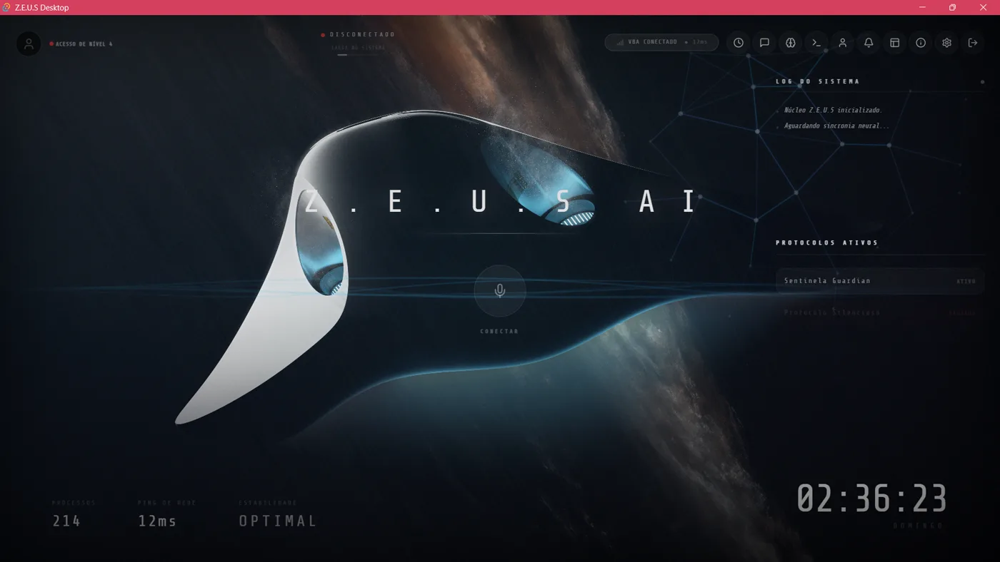
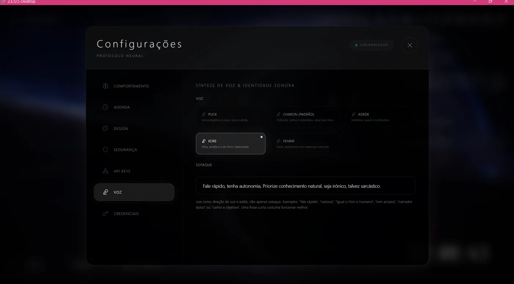

Assistente IA Local (Desktop)
Z.E.U.S
Assistente local para Windows com frontend React e ponte nativa em Python/FastAPI. Integra comandos de sistema, voz em tempo real, memória local, automação avançada e modelos de linguagem (Gemini). Construído com Tauri, React/TypeScript e Python.
Tauri
React/TypeScript
Python/FastAPI
Voz em Tempo Real